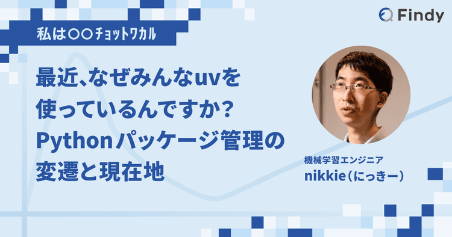
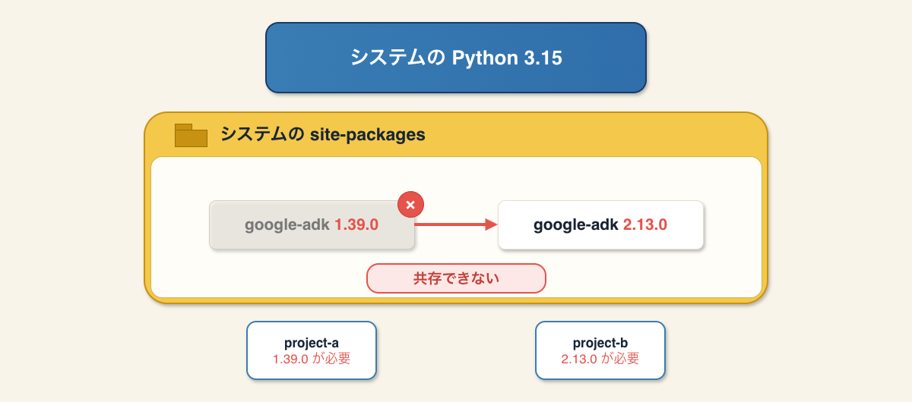
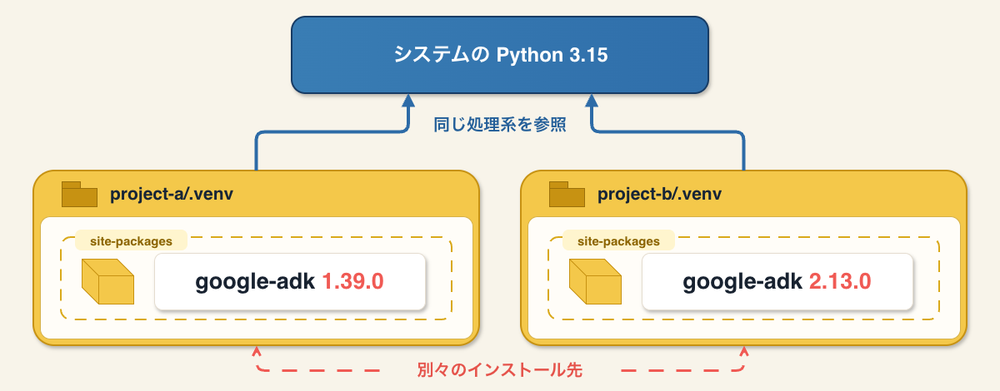
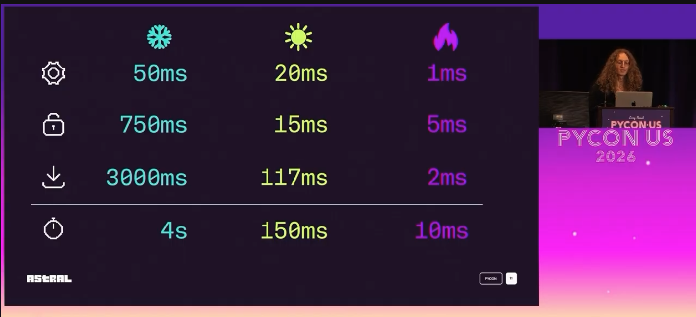

Pythonの環境構築をすることになったあなたへ（2026年版）
Pythonの環境構築をすることになったあなたへ（2026年版）
- Event:
Python環境構築を、もう一度考える ~uvに任せていいのはどこまで？~
- Presented:
2026/11/4 nikkie （スペース連打 or 矢印キーでめくります）
お集まりいただきありがとうございます
ゴール：今（2026年）の Python環境構築がつかめる （入口までお連れします）
Pythonの経験がない方も踏まえて前提知識補いながらお伝えします📻
お前、誰よ
nikkie（にっきー）・Codex Ambassador (Tokyo)・Devin Ambassador
機械学習エンジニア [1] ・Speeda AI Agent 開発（A2A・MCP・Slackbot 提供）
Python歴
興味あれば後ほどどうぞ

興味あれば後ほどどうぞ その2
目次：Pythonの環境構築をすることになったあなたへ
Pythonのドキュメントの方法（uv以前）
uv以後（uvに任せていいのはどこまで？を考えましょう）
2026年の話題
Part1 Python環境基礎（uv以前）
Python処理系のインストール
サードパーティパッケージを扱う際に、仮想環境
(1) Python処理系のインストール [2]
環境ごと に公式ドキュメントに沿ったやり方を紹介 [3]
Part2でuvで置き換えを案内するので、ここは雰囲気だけ掴んでいただければ
Windows
Python インストールマネージャ
> py -V:3.15
> py -V:3.14macOS
python.orgのインストーラ（+ Install Certificates） [4]
% python3.15
% python3.14Linux（例：Ubuntu）
最新 + deadsnakes PPA [5]
$ apt-get install python3.15-full python3.14-full$ python3.15
$ python3.14Python処理系を取り揃える
minorバージョンアップ例：3.10の match
言語機能が追加されるが、古い書き方も有効
Structural Pattern Matching は3.9のサポートが終了した2025年10月以降本格的に使うように
def fizzbuzz(number):
match number % 3, number % 5:
case 0, 0: return "FizzBuzz"
case 0, _: return "Fizz"
case _, 0: return "Buzz"
case _, _: return str(number)(2) Pythonが入った後は 仮想環境 （重要）
> py -V:3.15 -m venv .venv% python3.15 -m venv .venvvenvモジュール
Python処理系にバンドルされる標準ライブラリの1つ
仮想環境 を作る（主にCLIで使う）
仮想環境を 有効化
> .venv\Scripts\activate% source .venv/bin/activatepython コマンドに揃う
deactivateで抜けます
Pythonのサードパーティパッケージ
PyPI （Python Package Index）がデフォルト
GitHub等で公開も可能
サードパーティパッケージのインストール [7]
(.venv) は仮想環境が有効（PATH などが変更済み）なことを示します
(.venv) $ python -m pip install httpx2pip
パッケージマネージャ のCLI（ただし機能は 弱い）
サードパーティパッケージだが、Python処理系に バンドル されている [8]
venvはpipをインストールした仮想環境を作る
例：既存のPythonプロジェクトの開発に合流
% git clone https://github.com/my-company/awesome-project.git
% cd awesome-project
% python3.15 -m venv .venv --upgrade-deps
% source .venv/bin/activate
(.venv) % python -m pip install -e '.[dev]'python -m
モジュールをスクリプトとして実行（importせずにCLIとして使う） [9]
「pythonコマンドを介してpipモジュールを使う方法が推奨される」（第77回 ゼロからはじめるPython）
仕組み：仮想環境とは ディレクトリ
% python3.15 -m venv --help
usage: python3.15 -m venv ENV_DIR [ENV_DIR ...].venv/ というディレクトリができている [10]% python3.15 -m venv .venv --upgrade-deps
% ls -al
drwxr-xr-x 7 devin staff 224 Nov 2 08:28 .venvなぜディレクトリを作るのか
サードパーティパッケージのインストール先 にするため
あるパッケージのバージョン違いがマシンに共存可能になる（図解続く）
仮想環境を使わないとしたら、インストール先は1箇所

仮想環境で共存可能に

.venv/ には何がある？
.venv/
├── bin/
│ ├── activate
│ ├── pip
│ ├── pip3
│ ├── pip3.15
│ ├── python -> python3.15
│ ├── python3 -> python3.15
│ └── python3.15 -> /Library/Frameworks/Python.framework/Versions/3.15/bin/python3.15
├── lib/
│ └── python3.15/
│ └── site-packages/
└── pyvenv.cfg
マシンにインストールした処理系への シンボリックリンク [11]
.venv/
├── bin/
│ ├── activate
│ ├── pip
│ ├── pip3
│ ├── pip3.15
│ ├── python -> python3.15
│ ├── python3 -> python3.15
│ └── python3.15 -> /Library/Frameworks/Python.framework/Versions/3.15/bin/python3.15
├── lib/
│ └── python3.15/
│ └── site-packages/
└── pyvenv.cfg
サードパーティパッケージのインストール先
.venv/
├── bin/
│ ├── activate
│ ├── pip
│ ├── pip3
│ ├── pip3.15
│ ├── python -> python3.15
│ ├── python3 -> python3.15
│ └── python3.15 -> /Library/Frameworks/Python.framework/Versions/3.15/bin/python3.15
├── lib/
│ └── python3.15/
│ └── site-packages/
└── pyvenv.cfg
.venv/bin/python
.venv/bin/activateは環境変数PATHを更新して、.venv/bin/pythonが見つかるようにしている実は有効化せずに
.venv/bin/pythonを 直接実行 してもよい
📌 仮想環境は常に必要
Pythonプロジェクト [12] 、だけでなく
PyPIのパッケージをCLIツールとして使う
ちょっとしたPythonスクリプト
% python3.15 -m venv .venv --upgrade-deps⚠️仮想環境ってrenameすると壊れます
% .venv/bin/python -m pip install kojo-fan-art
% .venv/bin/kojo-day kokoro
% mv .venv myenv
% myenv/bin/kojo-day kokoro
zsh: myenv/bin/kojo-day: bad interpreter: /.../.venv/bin/python: no such file or directory仮想環境は 使い捨て （disposable）
インストールされたパッケージ一覧を書き出す
新しい名前の仮想環境に再度インストール
% .venv/bin/python -m pip freeze > requirements.txt
% python3.15 -m venv myenv --upgrade-deps
% myenv/bin/python -m pip install -r requirements.txtPart1 Python環境基礎 まとめ
Python処理系・venv・pip
1つのマシンにサードパーティパッケージのバージョン違いを共存させるために、仮想環境という仕組みを使っている
パッケージマネージャ、俺たち [13]
Python使いは皆 仮想環境を理解して管理 する時代が長かった
$ python3.15 -m venv .venv --upgrade-deps
$ source .venv/bin/activate
(.venv) $ python -m pip install httpx2
(.venv) $ python -m pip freeze > requirements.txt
(.venv) $ python -m pip uninstall httpx2Part2 uv以後
煩雑な仮想環境管理をツールにやらせる流れが重なり [14] 、uvに至る
任せていいのはどこまで？を考えて聞いてみてください
uv（2024〜）
Astralという会社が提案（3月にOpenAIが買収）
最初はRustで実装された高速なpipとして登場 [15]
0.3.0でPythonプロジェクト管理に機能増強 [16]
Astral
uvのインストール [18]
$ curl -LsSf https://astral.sh/uv/install.sh | sh> powershell -ExecutionPolicy ByPass -c "irm https://astral.sh/uv/install.ps1 | iex"$ mise use -g uvuv sync お試しあれ
pyproject.tomlがあれば（uv.lockなくとも）うまくいくことが多いツールによらず使える、Pythonプロジェクトのメタデータを書くファイルです（PEP 518）
uv sync の裏で
Pythonを見つける（ない場合はダウンロード）
ロックファイル
uv.lock作成仮想環境
.venv/を作り、ロックファイルと同期
uvが仮想環境を有効にして コマンド実行 [19]
$ uv run <command>仮想環境はuvにお任せ：依存の追加
$ uv add httpx2 --bounds majorpyproject.toml に書かれる[project]
dependencies = [
"httpx2>=2.16.0,<3.0.0",
].venv/ と uv.lock も作成・更新される
uvは Pythonも管理 できる [20]
$ uv python install 3.15 3.14どの環境でも同じコマンド [21]
既存のPython管理ツール（例：pyenv）とも共存します
新規プロジェクト作成 [22]
$ uv init my-project
$ cd my-project.
├── .git/
├── .gitignore
├── .python-version
├── pyproject.toml
├── README.md
└── src/
└── my_project/
└── __init__.py落ち穂拾い：uvと仮想環境
venvは使わずに仮想環境（ディレクトリ）を作る [23]
pipはない（uvが担えるので）
uvコマンドを使う限りは 仮想環境は意識しなくてよくなっている
uvと仮想環境 続き
仮想環境との同期
ロックファイルと仮想環境を最新化できる（Locking and syncing） [24]
--frozen: ロックファイルが最新でなくてもそのまま使って同期（CIで指定）
--no-sync: 仮想環境を最新化せず
裏の仕組み：python-build-standalone
CPythonはビルドが必要 だったが
Python処理系をダウンロードしたら動かせる ようになっている！uvはこれを使っている
小まとめ🥟 uvに任せられること
Pythonの管理
仮想環境の管理（サードパーティパッケージ管理）
簡単なので任せていっています
Part2（続）使い倒すぜ、uv
2026年のPython環境はこんなことができるんです！
uv以外にもツールはあるのですが、今回はuvの機能をmaxxingしましょう！
常に必要な仮想環境を 人間が意識しなくてよくなった としたら？
PyPIのパッケージをCLIツールとして使う
ちょっとしたPythonスクリプト
1️⃣PyPIにあるCLIツール
(.venv) % llm -m gpt-6-luna -f https://nikkie-ftnext.hatenablog.com/entry/2025/04/11/224643 'SNSでシェアする際のキャッチーなまとめを考えてください'CLIツールを仮想環境を意識せずに使えます！ [25]
一時的な仮想環境
仮想環境+マシングローバルにインストール
🅰️ uvx （uv tool run）
$ uvx llm -m gpt-6-luna -f https://nikkie-ftnext.hatenablog.com/entry/2025/04/11/224643 'SNSでシェアする際のキャッチーなまとめを考えてください'uvが 一時的な仮想環境 を作成
そこにCLIツールをインストールして実行
🅱️ uv tool install
$ uv tool install llm
$ llm -m gpt-6-luna -f https://nikkie-ftnext.hatenablog.com/entry/2025/04/11/224643 'SNSでシェアする際のキャッチーなまとめを考えてください'uvが仮想環境を作成
そこにCLIツールをインストールし、グローバルなパス を通す
2️⃣inline script metadata
サードパーティパッケージの管理を意識せず に使えるPythonスクリプト
私はシェルスクリプト代わりに使っています
スクリプトと別に仮想環境を用意していたが
.venv/bin/python -m pip install httpx2 richfrom datetime import datetime
import httpx2
from rich.pretty import pprint
resp = httpx2.get("https://peps.python.org/api/peps.json")
data = resp.json()
peps_desc_created = sorted(
data.items(),
key=lambda item: datetime.strptime(item[1]["created"], "%d-%b-%Y"),
reverse=True,
)
pprint([(k, v["title"], v["created"]) for k, v in peps_desc_created][:10])
PEP 723 - inline script metadata
# /// script
# requires-python = ">=3.13"
# dependencies = [
# "httpx2",
# "rich",
# ]
# ///
inline script metadataをサポートしたツール（例：uv run）は [26]
requires-pythonを満たすバージョンで仮想環境を作成dependenciesを仮想環境にインストールその仮想環境でスクリプトを実行
詳しくはPyCon JP 2024
uvはinline script metadataを書く
$ uv init --script awesome.pyawesome.py# /// script
# requires-python = ">=3.14"
# dependencies = []
# ///uvはinline script metadataを書く
$ uv add httpx2 --script awesome.pyawesome.py# /// script
# requires-python = ">=3.14"
# dependencies = [
# "httpx2>=2.10.0",
# ]
# ///持ち運びに超便利
コーディングエージェントのフックスクリプトに
stdioのMCPサーバ実装に
uv-ty連携はじまる [27]
uv 0.12.3以上、ty 0.0.76以上
VS Code ty拡張がinline script metadataを踏まえて型を示してサポートをしてくれます
uv使うならこれらもお試しあれ！
uvxやuv tool installでPyPIのパッケージをCLIツールとして使うちょっとしたPythonスクリプトにinline script metadataを書く
IMO：uvに任せる範囲を maxxing
Pythonの管理
仮想環境の管理
⭐️CLIとして使えるサードパーティパッケージ管理
⭐️inline script metadataを書いたスクリプト実行
uvにタスクランナー機能はない😢
Astralはコミュニティの要望放置しがち：Using uv run as a task runner #5903 (2024-)
私は miseと合わせる 立場（miseでuv入れて、uvにないタスクランナーをmiseで補う） [28]
お昼明けから試すなら
uv syncで入るかもしれないが、勝手にやらず採用するかチームで話しましょう [29]uv tool installやinline script metadataから個人で 小さく始める こともできます
Part3 2026年で考えたいトピック
コーディングエージェント
セキュリティ
1.コーディングエージェントとの相性
コーディングエージェントは 速い
速さは魔性：コーディングエージェントが使うツールも速くしたい
uvは速い [30]
Python処理系を介さない（Rust実装・バイナリ動作）だけでなく
高速化のための キャッシュ の超積極活用（
uv cache dirご覧あれ）
開発者による「Peeking under the hood of uv run」

uvがコーディングエージェントにベスト？
安全に使うため書き込めるディレクトリは制限されている [31]
コーディングエージェントが
uv runするとき、 書き込めるディレクトリとは別 のキャッシュに書き込むことに
uvのキャッシュを考慮してコーディングエージェントを設定
.codex/config.toml[sandbox_workspace_write]
writable_roots = [
"/Users/nikkie/.cache/uv", # uvのキャッシュ自体への書き込み許可
# "/Users/nikkie/.cache/codex/awesome-repo/uv", # そのリポジトリ用のuvのキャッシュで運用
]別案：コーディングエージェントには
uv run pytestを渡さず、 .venv/bin/pytest [32]
2.セキュリティ
サプライチェーン攻撃（2026年3月〜）
証明書の事故（2026年10月）
2-1. 変わり始めたPythonの世界
近年npmでサプライチェーン攻撃が展開されている（IMO：攻撃者を強く非難します）
PyPIでも 2026年3月、LiteLLMで サプライチェーン攻撃が発生
LiteLLM [33]
from litellm import completion
for model in ["openai/gpt-6.1-luna", "gemini/gemini-3.8-flash"]:
response = completion(model=model, messages=messages)
print(response.choices[0].message.content)LiteLLMへの攻撃で状況は大きく変わった
LiteLLM 1.82.7と1.82.8 （当時最新版）に悪意あるコードが仕込まれていた [34]
最新版インストール後、importしただけで環境の秘密情報が抜かれる（uvxして踏みました）
最新版のインストールがリスク
「最新版には悪意あるコードが入っているかも」
ロックファイルがあるPythonプロジェクトなら最新版は取りに行かない（踏むリスク低）
古いプロジェクトや、
uvx・inline script metadata [35] といった使い方で ロックファイルを作っていない
ロックファイルがない状況で最新版のリスクを減らす
cooldownの設定
セキュアなインデックスへの切り替え
完璧な1つの対策はない。どの対策にも穴があるが 重ね合わせて 貫通しなくする🧀 [36]
cooldown
最新版を一定期間避ける設定。コミュニティが攻撃を検出し、隔離・削除
~/.config/uv/uv.toml [37]exclude-newer = "7 days"セキュアなインデックス
例：Takumi Guard （無料）
サプライチェーン攻撃のリスクを認識しましょう
私は、
uvxからuv tool installに切り替えました（最新版にアクセスする回数を減らす）（紹介しきれなかったものとして uv audit）
2-2. eMudhra証明書の事故
中間認証局eMudhraが管理する秘密鍵（8つ）が公開鍵から容易に復元できてしまった
誰でもなりすませる！（HTTP S 通信にリスク😱）
対応いただいているOSS各位に深く感謝申し上げます
eMudhra証明書を含むチェーンを信頼してはいけません
パッケージがバンドルする証明書から各所で削除が進む
Pythonまとめ Information for Python users regarding eMudhra / emSign CA certificate security incident
uvでの対応
uv 0.13.4 でバンドルした証明書を更新（webpki-root-certs 1.0.10）
Pythonのダウンロードや、PyPIからパッケージのインストールの通信に使う
Pythonでの対応
Python 3.15.2, 3.14.10, 3.13.18, 3.12.16, 3.11.18
標準モジュール ssl がeMudhraの証明書を含むチェーンを ブロック するようにCVE対応した
uv python upgrade (uv 0.13.6以上)
macOSはeMudhraの証明書が残っている [39]
eMudhraの証明書は信頼できないという情報はマシンに配信されている（Safariやメールに適用）
しかし
/etc/ssl/cert.pemに残る（Appleのアップデート待ち）一般ユーザは安全、 開発者は注意が必要
macOSとuvの組合せ がややこしや
uvが使うpython-build-standaloneは
/etc/ssl/cert.pemを見てしまう挙動 [40]Python 3.15.2以降でsslモジュールがブロックするのでだいぶ安全になった
Part3 まとめ🥟2026年で考えたいトピック
IMO：コーディングエージェントには
uv runよりも.venv/bin/pythonを指示したい最新版のインストールがリスクに。cooldownはじめ複数の防御策を組み合わせましょう
eMudhraの証明書事故を受け、3.15.2など現在の最新が安全です（🍎🙏）
One more thing: pnpm
uvの完成度は高いが、言語をまたいだパッケージ管理ツールの登場に注目しています
まとめ🌯 Pythonの環境構築をすることになったあなたへ（2026年版）
Pythonの管理、仮想環境管理、
uv tool install・inline script metadata、便利なので任せてますあなたはuvにどこまで任せてみますか？
仮想環境の管理が簡単になっている
uvは仮想環境を「正しい使い方を簡単に、誤った使い方を困難に」した（+爆速 & ワンストップ）
メッセージ「仮想環境をツールに任せて楽してこーぜ」
Pythonを深く知りたい方には仮想環境を理解していくのをおすすめします
ご清聴ありがとうございました
質問お気軽にどうぞ！